Ce manuel décrit chaque fonction de l’appli, dans l’ordre où on s’en sert : pourquoi elle existe, comment l’utiliser, comment elle fonctionne, avec des exemples. Les encadrés colorés servent de repères : Pourquoi Comment Exemple Attention.
Sommaire
Le Générateur de Roadbook transforme une trace GPX (ou un parcours dessiné sur la carte) en roadbook de rallye-raid : une liste de notes à trois cases (distance, tulipe, instructions), comme un roadbook FIM / FIA. Il produit :
un GPX OpenRally pour le Roadbook Reader (le lecteur sur tablette ou téléphone), avec notes, waypoints, zones, règlement ;
un PDF / impression au format papier (5 notes par page A4) ;
un projet (.json) pour reprendre le travail plus tard.
| Mot | Signification |
|---|---|
| Trace | Le parcours : une ligne GPS qui suit des chemins. C’est la matière première. |
| Note | Une ligne du roadbook : un endroit du parcours où il faut dire quelque chose au pilote (carrefour, danger, repère…). Trois cases. |
| Tulipe | Le petit dessin du carrefour (2e case) : d’où l’on vient, où l’on va, quels autres chemins existent. |
| CAP | Direction à suivre en degrés (0° = nord, 90° = est, 180° = sud, 270° = ouest). Surtout utile hors piste. |
| WP (waypoint) | Point de passage du règlement : il se valide à une certaine distance (WPV, WPM, WPS, CP…). Voir chapitre 7. |
| DSS / ASS | Départ / arrivée de la spéciale (la partie chronométrée). |
| DZ / FZ | Début / fin d’une zone à vitesse limitée. |
| DN / FN, DT / FT | Début / fin de neutralisation ; début / fin de liaison (temps limite). |
| CH | Contrôle horaire. |
| Lexique | L’ensemble des symboles officiels du roadbook (FIM / FIA) que l’appli sait poser dans les notes. |
| Projet | Tout ton travail (trace, notes, réglages) dans un fichier .json ou dans un GPX « roadbook + projet ». |
| Lecteur | L’appli Android Roadbook Reader qui lit le GPX exporté et guide le pilote. |
Ouvrir GPX (ou Dessiner) : on charge ou on trace le parcours.
Générer le roadbook : l’appli repère les intersections sur les chemins et calcule tulipes, distances et caps.
Exporter GPX ou Imprimer : on récupère le roadbook.
Ensuite on peut corriger une note (✎), en ajouter une en cliquant sur la trace, ou poser des waypoints (WPV, WPM, DZ…).
En haut : le nom du roadbook (modifiable) et la barre de boutons.
À gauche : la carte, avec la recherche de lieu, le choix du fond et des couches, et la case « Rayons des waypoints ».
À droite : le roadbook, c’est-à-dire la case de description puis les notes, une par ligne. Le titre de la colonne indique la distance totale et le nombre de notes.
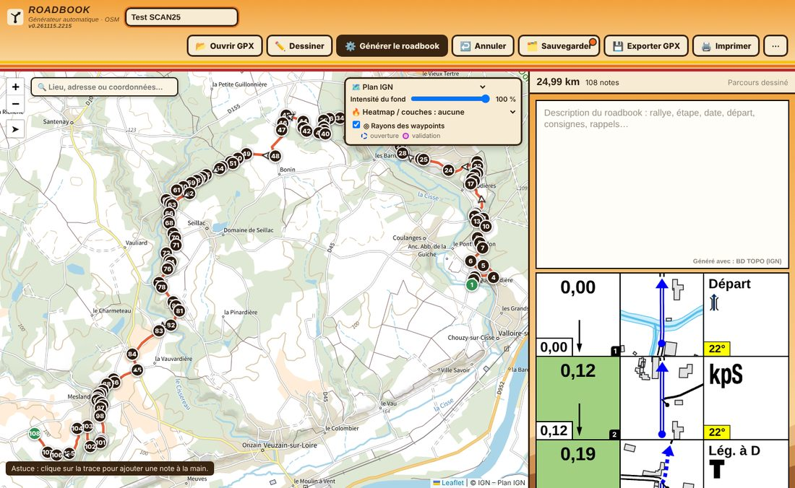
| Bouton | À quoi il sert | Effet |
|---|---|---|
| 📂 Ouvrir GPX | Charge une trace GPX, un projet (.json), un GPX exporté avec son projet, ou un GPX venu d’une autre source | Affiche la trace ; si le fichier contient un roadbook et son projet, le roadbook est restauré (chapitre 11) |
| ✏️ Dessiner | Ouvre le mode dessin (chapitre 2) | Permet de poser des points sur la carte, le tracé suit les chemins |
| ⚙️ Générer le roadbook | Lance la génération (chapitre 3) | Crée toutes les notes automatiques |
| 📋 Rapport | Rouvre le rapport de la dernière génération | Avertissements, notes gardées, parcelles… |
| ↩️ Annuler | Annule la dernière modification (Ctrl+Z) | Grisé tant qu’il n’y a rien à annuler |
| 🗂️ Sauvegarder | Enregistre le projet en cours (fichier .json) | Le point orange indique des modifications non enregistrées |
| 💾 Exporter GPX | Exporte au format GPX OpenRally (chapitre 11) | Choix du contenu et du règlement inclus |
| 🖨️ Imprimer | Imprime ou enregistre en PDF | Bande de 3 cases de 48 mm, 5 notes par page A4 |
| ⋯ | Menu des autres fonctions | Outils, projet, réglages, aide |
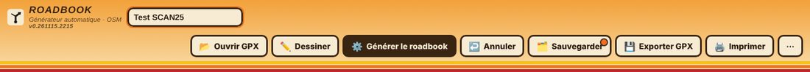
Le menu est organisé en quatre sections repliables (on touche le titre pour déplier ; une seule est ouverte à la fois). La version de l’appli est indiquée en bas.
| Section | Contenu | Détail |
|---|---|---|
| 🛠 Outils | Étapes · Mesurer un cap / liste des virages · Altitude et horaires · Marqueurs · Contrôler les notes · Dernier rapport de génération | chapitres 2, 6 et 8 |
| 🗂 Projet | Enregistrer le projet (.json) · Nouveau roadbook · Enregistrer / Charger des chemins OSM | chapitre 11 |
| ⚙️ Réglages | Réglages de génération · Mes réglages · Règlements particuliers · Thème · Langue / Language | chapitres 4, 10, 11 |
| ❓ Aide | Aide · Manuel d’utilisation | chapitre 12 |
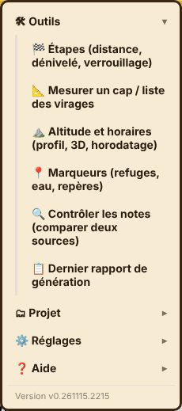
Le champ « Lieu, adresse ou coordonnées » en haut à gauche de la carte accepte un nom de lieu, une adresse ou des coordonnées. En France, il utilise le géocodeur de l’IGN ; ailleurs, Photon (OpenStreetMap). Un repère apparaît quelques secondes sur le lieu trouvé.
Un clic droit (ou un appui long sur écran tactile) sur la carte ou sur la trace ouvre une bulle : 👁 Google Street View (panorama le plus proche, dans un nouvel onglet), 🗺️ Google Maps (ouvre le lieu) et 📍 Ajouter un marqueur ici. Aucune note n’est ajoutée.
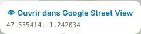
⋯ › Réglages › Thème bascule entre Dakar jour (fond sable, par défaut) et Bivouac nuit (fond sombre, plus reposant le soir).
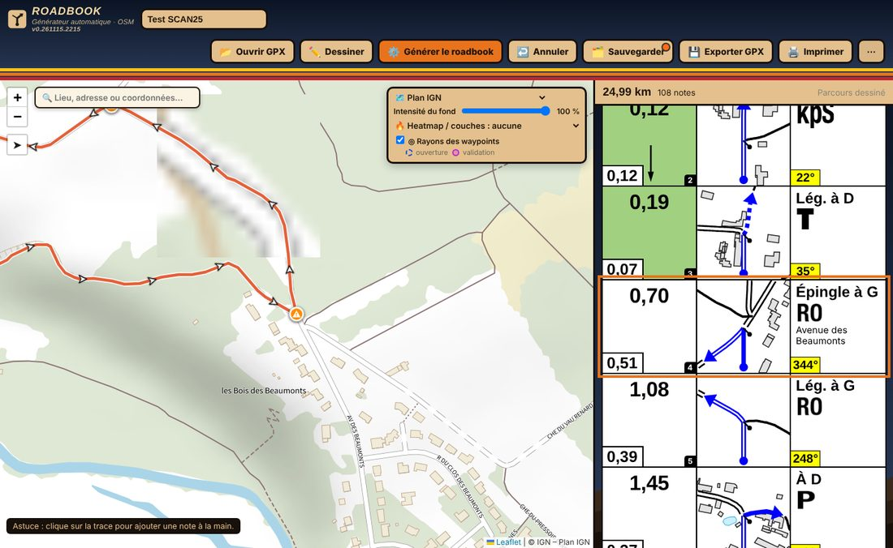
⋯ › Réglages › Langue / Language bascule l’appli entre Français et English, sans recharger la page. Au premier lancement, l’appli est en anglais si le navigateur est en anglais, en français sinon ; le choix est ensuite gardé dans le navigateur.
L’interface (menus, fenêtres, boutons, infobulles) change de langue.
Le texte des notes automatiques suit la même langue : « Lég. à D / sur piste » devient « Slight R / on track », « Hors piste » devient « Off piste », « Début goudron » devient « Tarmac starts », « Rond-point, 2e sortie » devient « Roundabout, 2nd exit », etc. Le changement s’applique tout de suite aux notes existantes, sans régénérer, et dans les deux sens. Les notes modifiées à la main ne changent jamais.
Les noms des symboles du lexique FIA s’affichent avec leur libellé officiel anglais.
Ne sont pas traduits : les noms propres (rues, lieux), le texte libre que tu écris, et la raison détaillée de « ? ». Le champ de date de la fenêtre Altitude et horaires dépend de la langue du navigateur.
Ce manuel existe aussi en anglais (lien « English » en haut de page). Le bouton 📖 Manuel d’utilisation ouvre la version qui correspond à la langue de l’appli.
Tout part d’une trace. Tu peux l’ouvrir depuis un fichier, la dessiner sur la carte, puis la retoucher.
📂 Ouvrir GPX accepte plusieurs types de fichiers :
| Fichier | Ce qui se passe |
|---|---|
| GPX avec une trace | La trace s’affiche sur la carte. Il n’y a pas encore de notes : on lance « Générer le roadbook ». |
| GPX « roadbook + projet » (exporté par l’appli) | Le roadbook complet est restauré : trace, notes, tulipes retouchées, waypoints, réglages. |
Projet .json | Même chose, depuis le fichier enregistré par 🗂️ Sauvegarder. |
| GPX sans trace (waypoints et images) | Import d’un roadbook venu d’une autre source : voir chapitre 11. |
Chemins OSM .rbosm | Recharge des chemins déjà téléchargés (voir chapitre 11). |
.json.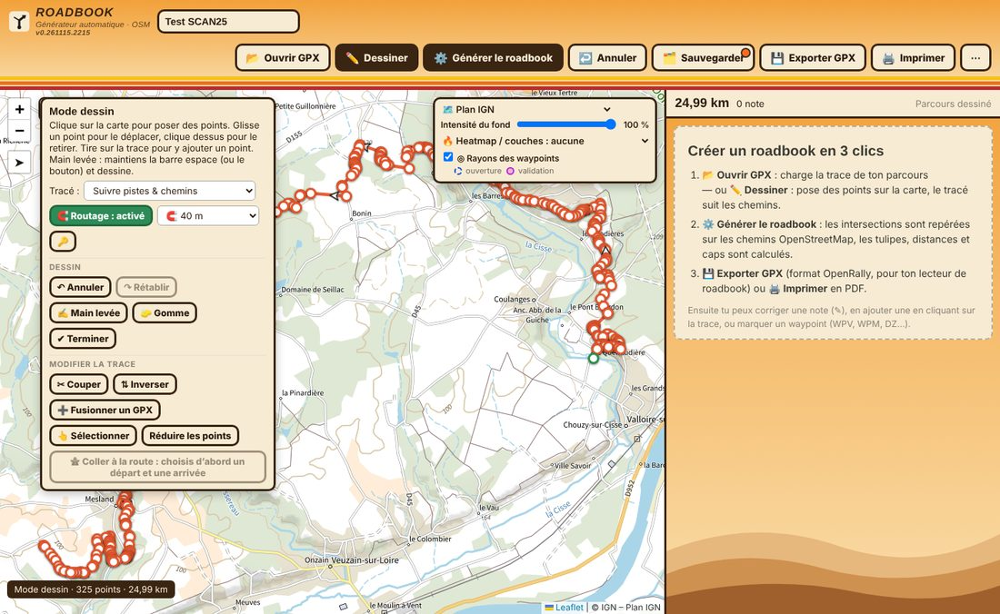
✏️ Dessiner ouvre un panneau sur la carte. Si une trace est déjà chargée, l’appli demande si on veut la modifier (les notes sont gardées et à régénérer) ou l’effacer pour en dessiner une nouvelle (les notes sont alors supprimées). On peut déplacer le panneau en le saisissant par son titre (« ⠿ Mode dessin »), à la souris ou au doigt ; sa position est mémorisée, et un double-clic sur le titre le remet à sa place d’origine.
🧲 Routage : activé / désactivé (touche R). Activé (vert), les prochains points sont reliés en suivant les chemins ; désactivé (blanc), ils sont reliés en ligne droite, pour passer hors piste. Chaque tronçon garde le réglage de sa pose : changer le bouton ne modifie pas ce qui est déjà tracé.
Le menu 🧲 à côté règle la distance de l’aimant (5, 10, 20, 30, 40 ou 50 m) ou le coupe (Aimant coupé : le routage reste actif, mais les points sont posés exactement où tu cliques).
Fonctionnement de l’aimant. Avec le routage activé, un point posé ou déplacé se replace sur la route ou le chemin le plus proche. S’il en est à plus de la distance réglée (40 m par défaut), il n’est pas posé et un message te le dit : rapproche-le, ou désactive le routage. Si le chemin n’est pas connu du calculateur d’itinéraire mais figure sur la carte (OpenStreetMap), le tracé le suit quand même : il suit la route jusqu’à la jonction, puis le chemin. Si la jonction n’est pas trouvée, le tronçon reste en ligne droite (message à l’écran). Déplacer un point recalcule les tronçons qui le touchent.
| Choix | Effet | Quand l’utiliser |
|---|---|---|
| Suivre pistes & chemins | Itinéraire (BRouter) qui privilégie pistes et chemins | Parcours de rallye-raid, cas général |
| Au plus court (sentiers inclus) | Le chemin le plus direct | Raccourcir un tronçon |
| Petites routes (cyclo) | Itinéraire sur petites routes | Liaisons tranquilles |
| Routes (voiture) | Itinéraire routier | Liaisons sur grands axes |
| Randonnée, VTT, Vélo de route, Marche (OpenRoute) | Profils OpenRouteService ; demandent une clé personnelle (bouton 🔑) | Parcours à pied ou à vélo |
| Ligne droite | Relie les points en ligne droite | Hors piste, dessin libre |
↶ Annuler / ↷ Rétablir (Ctrl+Z / Ctrl+Y) : reviennent sur les derniers points posés.
✍ Main levée : on maintient la barre espace (ou le bouton) et on dessine librement, comme au crayon.
🧽 Gomme : efface des points en les survolant, bouton enfoncé.
✔ Terminer : quitte le mode dessin.
Coche cette case dans le panneau pour que les notes se génèrent au fur et à mesure. Après chaque point posé (et une courte pause d’1,5 s), l’appli recalcule les notes de toute la trace et met le roadbook à jour à droite ; un petit témoin indique l’avancement (« ⏳ en attente… », « ✓ 13 notes · 2,1 s »). Les notes que tu as modifiées ou ajoutées à la main sont gardées. Sans connexion, le témoin affiche « ⚠ réseau indisponible » et tu peux continuer à dessiner. Le réglage est conservé d’une session à l’autre.
Ces outils sont dans le panneau du mode dessin. Une étape verrouillée (voir plus bas) ne peut pas être modifiée.
| Outil | Fonction | Exemple |
|---|---|---|
| ✂ Couper | Un clic sur la trace supprime le début ou la fin, ou change le point de départ d’une boucle | La trace de l’organisateur démarre 3 km avant le vrai départ : coupe-la au bon endroit |
| ⇅ Inverser | Inverse le sens du parcours | Le fichier a été tracé à l’envers |
| ➕ Fusionner un GPX | Ajoute un autre fichier GPX à la suite ou avant | Coller la liaison du matin à la spéciale de l’après-midi |
| 👆 Sélectionner | Choisit un point (1 clic) ou une section (clic sur le 1er puis le dernier point) | Isoler 800 m de trace approximative |
| Réduire les points | Diminue le nombre de points de la trace | Alléger une trace de 40 000 points |
| 🛣 Coller à la route | Recalcule la sélection pour qu’elle suive les chemins, selon le mode de tracé choisi. Grisé tant que rien n’est sélectionné | Redresser un tronçon dessiné à main levée |
⋯ › Outils › Étapes : distance et dénivelé par étape, cadenas 🔒 pour verrouiller une étape (aucune modification n’y est possible), bouton GPX pour exporter une étape seule, Ajouter une coupure pour créer une nouvelle étape et Calculer le dénivelé (internet nécessaire).
Le bouton ⚙️ Générer le roadbook télécharge les chemins autour de la trace, recale la trace dessus, repère chaque intersection et fabrique les notes avec leur tulipe.
Au clic, une fenêtre demande deux sources de données, car elles ne servent pas à la même chose :
Tulipes : la source qui dessine les routes, pistes et carrefours. En France, la BD TOPO de l’IGN est la plus fidèle.
Instructions de la 3e case : la source qui fournit les noms de routes, ponts, numéros et repères. OSM détaillé est le plus complet.
On peut prendre la même source pour les deux. Si elles diffèrent, l’appli charge un second réseau pour les instructions seulement ; si ce second réseau est indisponible, elle utilise la source des tulipes et le dit. Une phrase sous les listes annonce ce que le descriptif indiquera (« Tulipes : … · Instructions : … »).
| Source | Particularités | À choisir quand |
|---|---|---|
| BD TOPO (IGN) | Réseau très fidèle, France seulement. Routes, chemins, ronds-points, ponts, gués, noms et numéros de routes, eau, bâtiments | Parcours en France, tulipes soignées |
| OpenFreeMap vectoriel (OSM) | Rapide, partout dans le monde, sans clé. Nombre de repères plus limité | Premier jet, parcours hors de France |
| OSM détaillé (Overpass) | Le plus complet (clôtures, STOP, sable, pentes…) mais plus lent, et les serveurs gratuits sont parfois saturés | Quand les repères comptent (instructions riches) |

Une barre de progression indique l’étape (téléchargement des chemins, recalage de la trace, repérage des intersections, dessin des tulipes) et le temps écoulé. Annuler arrête la génération.
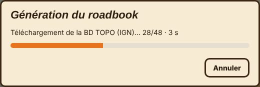
Reprise des téléchargements. Les zones de carte (BD TOPO, OpenStreetMap, fond vectoriel) sont gardées dès qu’elles sont reçues. Si un téléchargement échoue ou si tu l’annules, la génération suivante repart de là sans retélécharger ces zones (« déjà en mémoire »).
Quand c’est fini, une fenêtre Roadbook généré — rapport reste ouverte jusqu’au clic sur Fermer :
le nombre de notes, d’intersections, de virages serrés et de repères ;
les notes gardées (modifiées à la main) et les notes recalculées ;
le pourcentage de parcours reconnu sur les chemins ;
les sources réellement utilisées ;
un bloc À savoir avec les avertissements (repli de source, couches non chargées…) et l’alerte « Parcours peu reconnu » si moins de 60 % de la trace a pu être recalée.

📋 Copier place le rapport dans le presse-papiers, 💾 Enregistrer (.txt) le sauvegarde en fichier texte (nom du roadbook, date, version, résultat et avertissements).

Le rapport liste aussi les panneaux et obstacles repérés mais écartés, avec la raison (par exemple : posé sur une autre voie que la tienne, après le carrefour, mauvaise direction). Tu peux le rouvrir à tout moment avec le bouton 📋 Rapport ou ⋯ → Outils → Dernier rapport de génération.
Le trait noir sur la carte est la partie de la trace recalée sur les chemins : les intersections sont repérées sur ce trait. Des flèches orange indiquent le sens de la trace.

⋯ › Réglages › Réglages de génération ouvre quatre blocs repliables, enregistrés avec le projet. Le symbole ↻ à régénérer signale un bloc dont les changements ne s’appliquent qu’après une nouvelle génération ; ⚡ immédiat signale un bloc dont les changements s’appliquent tout de suite. En bas : Valeurs par défaut, Annuler, Enregistrer.
| Option | Définition | Effet |
|---|---|---|
| Source des chemins | Rapide (fond vectoriel OpenFreeMap, par défaut), IGN (BD TOPO, France), IGN détaillé (BD TOPO avec les repères), Détaillé (OpenStreetMap complet via Overpass) | Valeur de départ de la fenêtre de génération. Le détail des repères disponibles s’affiche dans « Détails des sources » |
| Source des instructions de la 3e case | Même source que les chemins (par défaut) ou une autre : Rapide, IGN, Détaillé (OpenStreetMap) | Les tulipes viennent de la source des chemins ; les noms de rues, ponts et numéros de la 3e case peuvent venir d’une autre source |
| Écart maxi trace ↔ chemins (m) | Distance maximale pour recaler la trace sur un chemin (0 à 100, 0 par défaut : trace gardée telle quelle) | Plus grand : retrouve une trace dessinée à main levée. 0 : pas de recalage |
| Inclure les voies piétonnes et cyclables | footway, cycleway, escaliers | Ajoute ces voies au réseau, donc des carrefours en plus |
| Option | Définition | Effet |
|---|---|---|
| Regrouper les notes à moins de (m) | Distance en dessous de laquelle deux notes sont fusionnées (5 à 100 m, 30 par défaut) | Moins de notes serrées |
| Noter aussi les intersections où l’on continue tout droit | Un TD est noté à chaque carrefour | Décoché : beaucoup moins de notes |
| Noter les fourches (Y) dont une branche est d’un autre type | Y route + chemin | Ajoute les fourches qui changent de type de voie |
| Noter les T et croisements dont les autres branches sont d’un autre type | T ou croisement route + chemin | Ajoute ces carrefours |
| Regroupement des notes sur une même route ou piste (FRO / FPP) | Curseur : 0 aucun, 1 prudent, 2 normal, 3 large | Plus haut : moins de notes quand on reste sur la même route. Les STOP, ponts, passages à niveau, villages, ronds-points et changements de numéro de route coupent toujours la série |
| Noter les changements « fin / début goudron » | Passage route ↔ piste | Ajoute une note Fin / Début goudron |
| Noter les virages serrés hors intersection | Virages sans carrefour | Ajoute les épingles et virages serrés |
| Angle mini d’un virage serré (°) | De 60 à 170 | Plus petit : plus de virages notés |
| Noter les passages hors piste | Trace en dehors des chemins | Direction, flèche en pointillés et CAP |
| Notes de repères | Gués, passages à niveau, stops, portails, ponts, tunnels, sable, pentes, clôtures, villages, cols, stations-service | Interrupteur général du groupe |
| Repères visuels | Châteaux d’eau, antennes, églises, éoliennes, sommets, lieux-dits, noms des pistes | Interrupteur général du groupe |
| Choisir les repères un par un | Liste de cases à décocher, avec Tout cocher / Tout décocher | Retire un type de repère précis du roadbook (certains n’existent que selon la source) |
| Option | Définition | Effet |
|---|---|---|
| Rayon dessiné dans la tulipe (m) | De 25 à 120 m, 50 par défaut | Plus grand : zone plus large autour du carrefour |
| Dessiner les cours d’eau et plans d’eau | Bleu ciel | Ajoute l’eau dans les tulipes |
| Dessiner les bâtiments | Rectangles gris | Ajoute les bâtiments dans les tulipes |
| Montrer la route d’où l’on vient et où l’on va | Prolongement du noir avant le point de départ et après la flèche | Décoché : tulipe plus épurée |
| Option | Définition | Effet |
|---|---|---|
| Écrire aussi le CAP dans la tulipe | Pastille jaune (chiffre + « C ») dessinée dans le coin le moins chargé de la tulipe (à l’écran et dans le GPX) | Coché (défaut) : le CAP est lisible même dans un lecteur qui n’affiche pas le CAP. Décoche si ton lecteur l’ajoute lui-même (sinon il serait en double) |
| WPM automatiques en hors-piste | Un WPM (ouverture 800 m, validation 90 m) est posé sur chaque note dont le tronçon précédent est hors des chemins de la source d’instructions | Coché (défaut) : la 1re note d’un hors-piste n’en a pas, les suivantes oui tant que ça dure. Décoche pour ne rien ajouter ; un WPM modifié à la main est conservé |
| Remplacer les repères connus par leur symbole du lexique | Pont, Tunnel, Gué, rond-point, village, antenne… | Décoché : le texte revient |
| Afficher les directions dans la 3e case | TD, Lég. à G, À D, Épingle, Serrer à D… | Décoché : la direction disparaît de l’écran, de l’impression et du GPX ; le reste ne change pas |
| Afficher « sur route / sur rue » (RO) | Type de chemin | Décoché : symbole RO masqué, le regroupement FRO reste actif |
| Afficher « sur piste » (P) | Type de chemin | Décoché : symbole P masqué, le regroupement FPP reste actif |
| Afficher « sur sentier » (T) | Type de chemin | Décoché : symbole T masqué |
| Afficher les noms de route dans les instructions | Nom de la rue ou de la piste, numéro de route (D 976) | Décoché : noms et numéros disparaissent des notes automatiques |
| Afficher le CAP | Sur toutes les notes · Uniquement sur les sentiers et hors piste · Jamais | Appliqué tout de suite aux notes automatiques (sans régénérer) et aux notes créées ensuite ; une note modifiée à la main garde son propre réglage |
Les chemins téléchargés sont gardés dans le navigateur pour aller plus vite. Le bouton Vider cette mémoire (bas de la fenêtre) les efface. ⋯ › Projet › Enregistrer les chemins OSM en fait une copie dans un dossier au choix (fichier .rbosm) et Charger des chemins OSM les recharge : la génération n’a plus besoin de les télécharger (voir chapitre 11).
| Je veux… | Je règle |
|---|---|
| Un roadbook minimal (changements de direction seulement) | Décocher « intersections tout droit », FRO/FPP à 3, décocher « Notes de repères » et « Repères visuels », garder les virages serrés |
| Un roadbook très détaillé | Cocher tout droit, FRO/FPP à 0 ou 1, repères et repères visuels activés, source OSM détaillé pour les instructions |
| Moins de notes sur de la route | Augmenter « Regrouper les notes à moins de » et le niveau FRO/FPP |
| Des intersections manquantes | Augmenter l’écart maxi trace ↔ chemins (70 m), cocher les voies piétonnes et cyclables si ce sont des sentiers |
| Des tulipes plus lisibles | Réduire le rayon dessiné (35 m), décocher bâtiments et eau, décocher la route d’où l’on vient |
| Le CAP seulement hors piste | Afficher le CAP : « Uniquement sur les sentiers et hors piste » |
| Un roadbook en anglais | ⋯ › Réglages › Langue : le texte des notes automatiques suit |
Chaque note du roadbook tient sur une ligne de trois cases carrées identiques, comme dans un roadbook FIM / FIA. Le roadbook commence par une grande case de description, puis les notes dans l’ordre du parcours.
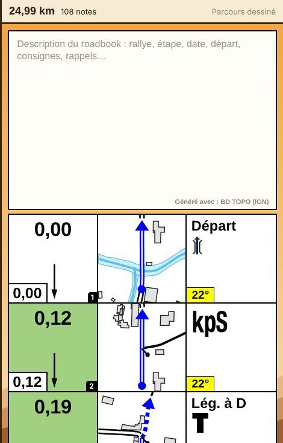
Au survol d’une note, trois boutons apparaissent : ? (pourquoi cette note), ✎ (modifier) et 🗑 (supprimer).
| Case | Contenu |
|---|---|
| 1re case (distance) | Kilométrage en haut (avec une virgule), distance depuis la note précédente dans un cadre en bas à gauche, symbole du waypoint à droite, numéro de la note dans l’onglet noir. Une flèche longue apparaît si la note suivante est à 300 m ou moins |
| 2e case (tulipe) | Dessin du carrefour : point = on arrive ici, flèche = direction à prendre |
| 3e case (instructions) | Direction, symboles du lexique, texte, danger (! rouges en haut à gauche) et CAP dans un encadré en bas à gauche : jaune = CAP actif (exporté et imprimé), gris = CAP désactivé (visible seulement à l’écran). Un clic sur l’encadré l’active ou le désactive, un double clic ouvre la mesure du cap |
Couleurs de la 1re case (tableau FIM) : fond vert quand la note précédente est à 300 m ou moins ; bleu clair pour un WPM, jaune pour un WPC, saumon pour un WPS, rose pour un WPN, orange pour une zone DZ, vert vif pour une fin de zone FZ, gris pour DN / FN / DT / FT.
Cadres colorés : orange du début à la fin d’une zone de vitesse (DZ → FZ) ou d’une neutralisation avec vitesse ; rouge pour un WPS ou un danger 3 ; rose autour de la tulipe d’un CP.
La génération crée : Départ et Arrivée, intersections (TD, Lég. à D/G, À D/G, Épingle, Serrer à D/G pour les fourches), ronds-points (une seule note, prise au milieu de l’anneau, avec le numéro de la sortie), virages serrés hors intersection, passages hors piste, changements de goudron, et les repères (gués, ponts, tunnels, passages à niveau, villages, églises, châteaux d’eau, antennes…). Le texte de ces notes est écrit dans la langue de l’appli. Les lignes de texte connues sont remplacées par leur symbole du lexique FIA (Pont, Tunnel, Gué, rond-point, TD → kpS, Serrer à D → kpR…) et un symbole ET s’insère entre les symboles qui se combinent.
Dans la fenêtre d’une note (bouton ?), l’encadré Pourquoi cette note ? explique son origine : par exemple « Intersection à 3 branches : tourner à gauche · données IGN », ou « 8 carrefours regroupés : la trace reste sur la même route D 28 ».
Un clic sur le crayon d’une note ouvre sa fenêtre, avec quatre onglets : Note, Dessin, Waypoint et Zone (ces deux derniers : chapitre 7). Boutons : Supprimer (efface la note), Annuler, Enregistrer.
| Champ | Définition | Effet |
|---|---|---|
| Texte de la note | Première ligne en gros, lignes suivantes plus petites | Remplace le texte automatique (la note est alors marquée comme modifiée) |
| CAP (°) | Cap de sortie, de 0° (nord) à 360° | Affiché dans l’encadré jaune de la 3e case |
| 📐 Mesurer | Mesure le cap sur la carte (chapitre 8) | Remplit le champ CAP |
| Danger | Aucun, ! (niveau 1), !! (niveau 2), !!! (niveau 3) | Points d’exclamation rouges en haut à gauche ; le niveau 3 donne un cadre rouge |
| Distance (km) | Position de la note sur le parcours | Modifiable à la main |
| Couleur du texte | Noir ou autre couleur | Change la couleur du texte de la note |
| Gras | Normal (1re ligne en gras), Tout en gras, Rien en gras | Style du texte |
| Afficher le CAP sur cette note | Case à cocher | Active (jaune) ou désactive (gris) le CAP de la note ; aussi possible d’un clic sur le CAP dans la liste |
| Carburant (ravitaillement) | Case à cocher | Ajoute le symbole de pompe à carburant dans la 1re case |

Rayon dessiné dans la tulipe (m) : plus grand = la tulipe montre une zone plus large autour du carrefour (de 20 à 150 m, propre à cette note).
✏️ Modifier la tulipe (traits, points) : ouvre l’éditeur de tulipe (chapitre 6).
Symboles du lexique FIA : deux cases côte à côte montrent le rendu réel de la tulipe et de la case description. On y glisse des symboles ; Taille (curseur ou molette), Rotation, Retirer ce symbole, Mettre en avant-plan / en arrière-plan règlent chaque symbole. ＋ Texte ajoute un texte libre déplaçable, ＋ Ajouter des symboles ouvre la liste (recherche en français ou en anglais, onglets par catégorie : Pistes, Sur la piste, Caps, Sécurité, Dunes / sable, Symboles, Contrôles, Abréviations), 📥 Importer mon symbole ajoute une image personnelle.

Ajouter : un clic sur la trace pose une note à cet endroit, analysée comme à la génération (tulipe, symboles, repères proches). Elle porte l’étiquette « manuelle » à l’écran (pas à l’impression) et survit à une nouvelle génération. Dans une zone de carrefours regroupés, la tulipe est dessinée à l’endroit cliqué, pas recopiée de la note voisine.
Déplacer : un clic sur le numéro d’une note la sélectionne ; seule la note sélectionnée se déplace. On la glisse le long de la trace (une bulle indique l’écart et le nouveau km), puis une fenêtre demande de confirmer. Annuler remet la note en place. Le déplacement est libre : la note reste exactement où on la dépose, et son contenu est régénéré pour ce nouvel endroit.
Supprimer : bouton 🗑 de la note, ou Supprimer dans sa fenêtre.
La grande case en tête du roadbook accueille un texte libre (rallye, étape, date, départ, consignes). Il est enregistré automatiquement, imprimé en haut de la page 1 (il compte pour 2 places) et ajouté dans le champ description du GPX exporté.
La tulipe est le dessin de la 2e case. Elle montre le carrefour tel que le pilote le voit en arrivant.
Bleu pur = ton parcours (trait fin, flèche en bleu).
Noir = les autres chemins, découpés là où le parcours passe.
Double trait = route goudronnée ; trait plein = piste ; pointillés = sentier ou petite piste.
Bleu ciel = cours d’eau ; rectangles gris = bâtiments.
Le noir continue avant le point de départ et après la flèche : c’est la route d’où l’on vient et où l’on va (réglable).
Il se lance depuis l’onglet Dessin d’une note, avec ✏️ Modifier la tulipe (traits, points).
| Commande | Définition | Effet |
|---|---|---|
| Clic sur un trait | Choisit le trait | Ses points deviennent visibles |
| Glisser un point | Déplace le point | Le trait suit |
| Clic sur le trait choisi | Ajoute un point à cet endroit | Permet de régler une courbe |
| Route / Piste / Hors piste | Type du trait choisi | Double trait, trait plein ou pointillés |
| ➖ Retirer le point | Supprime le point choisi | Le trait se redresse |
| ✂️ Simplifier | Réduit le nombre de points du trait | Trait plus net, utile au doigt |
| 🗑 Supprimer le trait | Efface le trait choisi | Le carrefour est simplifié |
| ＋ Nouveau trait | Dessine un chemin absent | Le trait neuf se choisit puis se règle |
| Annuler / Enregistrer | Abandonne ou garde les retouches | Une tulipe retouchée est conservée à la régénération |

Le trait bleu est le parcours : il se déplace comme les autres, mais il reste le fil conducteur de la tulipe.
⋯ › Outils › Contrôler les notes compare, autour de chaque note (40 m), les voies connues par deux sources. Une note est signalée (⚠) quand l’une des sources montre au moins 25 m de voie que l’autre ne montre pas. Rien n’est modifié par le contrôle lui-même.
Choisis la Source de données (celle des tulipes actuelles) et le Fond à comparer. Choix possibles : BD TOPO (IGN), Plan IGN vectoriel (BD TOPO), OpenFreeMap (OSM).
Clique Lancer le contrôle : l’appli télécharge la seconde source si besoin et liste les notes à revérifier, avec le nombre de mètres de voie en désaccord.
Touche une ligne : la fenêtre affiche les deux tulipes côte à côte (A et B), et la carte derrière reste utilisable (zoom, déplacement) pour juger sur le terrain.
Clique Garder A ou Garder B : la tulipe choisie remplace celle de la note, qui est alors marquée comme retouchée. Les flèches ‹ › passent à la note signalée suivante ou précédente, ← Liste revient à la liste.
Effacer les ⚠ retire les marques d’avertissement sans rien changer aux notes.

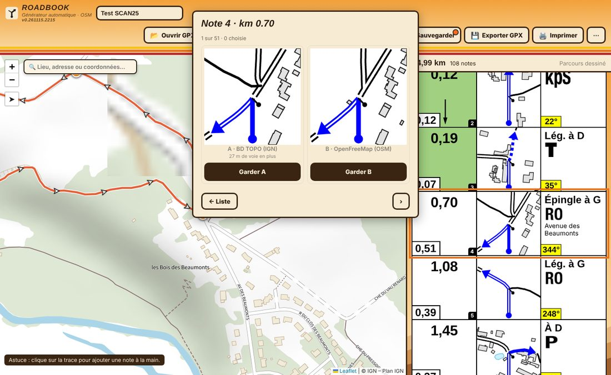
Un waypoint transforme une note en point de passage du règlement : le symbole officiel du lexique FIM apparaît dans la 1re case, des cercles s’affichent sur la carte et le GPX exporté le déclare au lecteur. Un seul waypoint principal par note ; il se combine avec une zone de vitesse et le carburant.

| Waypoint | Signification | Rayons par défaut (ouverture / validation) | Usage typique |
|---|---|---|---|
| WPV | Visible (toujours affiché) | – / 200 m | Point à rejoindre, connu de tous |
| WPM | Masqué (n’apparaît qu’à l’approche) | 800 / 90 m | Vérifier que le pilote suit bien la trace |
| WPS | Sécurité (toujours un danger, cadre rouge) | 1000 / 30 m | Passage dangereux à ralentir |
| WPE | Éclipse | 1000 / 90 m | Selon le règlement de l’épreuve |
| WPC | Contrôle | – / 300 m | Contrôle sans flèche : seul l’ordre compte |
| WPN | Navigation | 800 / 200 m | Point de navigation (pénalité élevée si manqué) |
| WPP | Précision | 100 / 20 m | Point à passer avec précision |
| CP | Contrôle de passage (cadre rose autour de la tulipe) | 1000 / 90 m | Poste de contrôle |
| CH | Contrôle horaire (liaison) | pas de rayons par défaut | Pointage à l’heure |
| DSS | Départ de spéciale | 1000 / 200 m | Début du chrono |
| ASS | Arrivée de spéciale | 800 / 90 m | Fin du chrono |
| DN / FN | Début / fin de neutralisation | 1000 / 90 m | Traversée de village, arrêt imposé |
| DT / FT | Début / fin de liaison (temps limite) | 1000 / 90 m | Liaison à temps imposé |
Nom / n° : « auto » par défaut, ou un nom à toi (WP 12, CP 3…). Ce nom est écrit dans le GPX pour tous les types de waypoint (DN, CH compris).
Description du waypoint : texte libre, sans limite (consigne, énigme, indice…). Le lecteur l’affiche dans une fenêtre à lire à l’arrêt quand le waypoint est validé. Une case « Afficher une description quand ce waypoint est validé » active la description waypoint par waypoint (décochée, le texte est gardé mais n’est pas exporté). Les descriptions actives sont lisibles en clair dans le GPX.
Ouverture (m) : distance à laquelle le waypoint devient actif. Vide = toujours visible ou jamais ouvert, selon le type.
Validation (m) : distance à laquelle il est validé. Les valeurs du tableau FIM sont proposées et modifiables selon le règlement de l’épreuve.
Temps limite (min, facultatif) : pour un DSS ou un DT. Exporte dans le GPX la balise de contrôle de temps (timecontrol allowed), pour que le lecteur puisse calculer une heure limite.
Vitesse maxi (km/h, facultatif) : pour un DN ou un DT avec limite de vitesse (symbole orange).
Durée de neutralisation (min) : pour un DN. Exportée en secondes dans le GPX.


Les cercles s’affichent sur la carte quand la case ◎ Rayons des waypoints est cochée : cercle bleu pointillé = ouverture, cercle violet = validation. La note sélectionnée a des traits plus épais. Le choix de la case est mémorisé dans le navigateur.

DZ — début de zone : début d’une zone à vitesse limitée. Le champ Vitesse maxi (km/h) donne le chiffre du panneau orange.
FZ — fin de zone : fin de la zone en cours ; le panneau est barré.
FZ + DZ : fin d’une zone et début de la suivante sur la même note.
Effet : toutes les notes entre DZ et FZ reçoivent un cadre orange, la 1re case change de couleur (orange pour DZ, vert vif pour FZ), et le GPX porte les balises dz / fz avec leur vitesse. Rayons fixes de 1000 m / 90 m.
Le champ Danger de l’onglet Note ajoute 1, 2 ou 3 points d’exclamation rouges en haut à gauche de la 3e case. Le niveau 3 (comme un WPS) dessine un cadre rouge sur la ligne. Le lecteur les reprend depuis le GPX.
À la génération, l’appli ajoute aussi des notes de danger repérées sur la carte (passage piéton, feux tricolores, ralentisseur, bandes sonores, etc.) avec leurs symboles, et signale l’entrée et la sortie d’un village. Chaque type se coupe ou se remet dans les réglages (« Quelles notes créer »).
La case Carburant (ravitaillement) de l’onglet Note ajoute le symbole de pompe dans la 1re case et le déclare dans le GPX. Elle se combine avec n’importe quel waypoint.
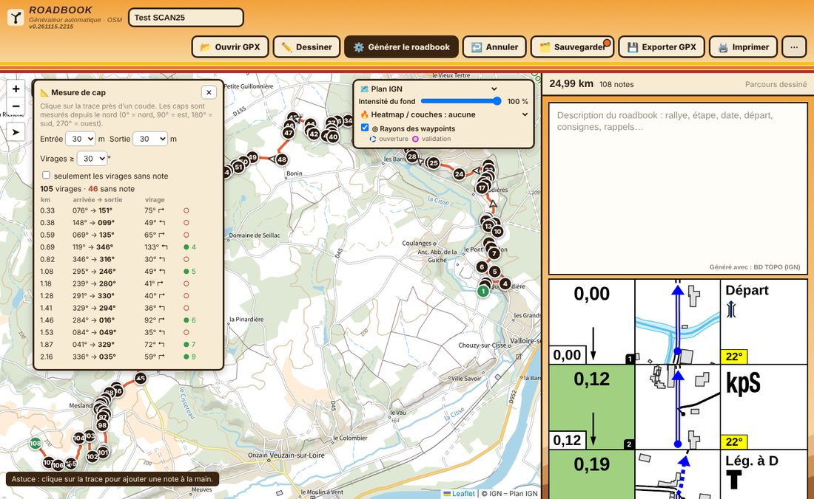
⋯ › Outils › Mesurer un cap / liste des virages ouvre un panneau de mesure sur la carte. Les caps sont mesurés depuis le nord (0° = nord, 90° = est, 180° = sud, 270° = ouest). Le panneau se déplace : on tire son titre pour le placer où l’on veut.
Mesure ponctuelle : on clique sur la trace près d’un coude ; le panneau donne le cap d’arrivée et le cap de sortie.
Entrée (15, 30, 50 m) et Sortie (15 à 200 m) : longueur de trace utilisée avant et après le coude pour calculer ces caps. Court = cap local précis ; long = cap moyen, plus stable sur une trace irrégulière.
Virages ≥ (20 à 90°) : angle minimal pour qu’un virage soit listé.
Seulement les virages sans note : limite la liste aux virages qui n’ont pas encore de note.
La liste : une ligne par virage avec le km, les caps arrivée → sortie, l’angle et le sens (↱ droite, ↰ gauche), et un indicateur ○ (pas de note) ou ● n (note n existante). Elle permet de poser une note avec son CAP là où il en manque.

⋯ › Outils › Altitude et horaires : Calculer l’altitude donne le profil et la vue 3D (internet nécessaire). L’Horodatage estime les horaires : heure de départ, vitesse moyenne (avec ou sans tenir compte de la pente), durée et arrivée par étape. La case Ajouter les heures (et l’altitude) à la trace du GPX exporté les inscrit dans la trace.

⋯ › Outils › Marqueurs place sur la carte des repères utiles : refuges, eau, carburant. Refuges, eau, carburant (zone visible) les cherche dans la zone affichée ; Ajouter sur la carte pose un marqueur à la main (comme « 📍 Ajouter un marqueur ici » du clic droit). La case Les ajouter au GPX exporté les inclut dans le fichier.
Rouvre le rapport de la dernière génération (aussi via le bouton 📋 de la barre) : notes gardées, avertissements, obstacles écartés (chapitre 3).
Le bouton 🗺️ de la carte ouvre le choix du fond. Ces fonds sont des images pour regarder le terrain : les tulipes ne viennent jamais du fond affiché, mais de la source de chemins choisie à la génération.
| Fond | Usage |
|---|---|
| SCAN 25 (cartes IGN) | Carte topographique de référence en France |
| Plan IGN | Plan mis à jour chaque mois depuis la BD TOPO, le plus proche des tulipes en mode IGN |
| Plan IGN vectoriel (BD TOPO) | Version vectorielle du plan IGN |
| Photos aériennes | Photographies aériennes IGN : voir l’état réel d’un chemin |
| OpenTopoMap | Relief et courbes de niveau, monde entier |
| OSM standard | Carte OpenStreetMap classique |
| CyclOSM (pistes) | Met en valeur pistes et chemins |
| OpenFreeMap vectoriel (OSM) | Fond vectoriel, celui du mode rapide |
| Satellite, Esri Topo | Images satellite et carte topo Esri, monde entier |
| ➕ Ajouter / gérer mes fonds | Fonds personnalisés (adresse avec {z}/{x}/{y}) |
Intensité du fond : un curseur de 0 à 100 % atténue le fond pour mieux voir la trace et les notes (double-clic sur le pourcentage : retour à 100 %).
« ➕ Ajouter / gérer mes fonds… » (liste des fonds) ou « ➕ Ajouter / gérer mes couches… » (Heatmap / couches) : choisis Fond de carte (il remplace le fond) ou Couche à superposer (elle se pose par-dessus le fond, avec son curseur d’intensité), puis colle l’adresse d’un service de tuiles image (avec {z}, {x}, {y}), d’un service de tuiles vectorielles (.pbf, dessinées avec un style simple) ou d’un fichier de style (.json MapLibre) : l’appli en lit les tuiles, les zooms et les couleurs.
https://data.geopf.fr/annexes/ressources/vectorTiles/styles/PLAN.IGN/classique.json. Les motifs, pictogrammes et noms placés le long des lignes ne sont pas dessinés.
Le menu Heatmap / couches superpose des informations utiles au terrain : fréquentation, ombrage, pentes, forêts et courbes de niveau de l’IGN (utilisables sur n’importe quel fond). Un second curseur règle leur intensité.
| Couche | Ce qu’elle montre | À quoi ça sert |
|---|---|---|
| Traces GPS (OpenStreetMap) | Où les gens roulent réellement | Repérer un chemin fréquenté qui n’est pas sur la carte |
| HeatMap Générée OSM | Même idée, calculée pour ta zone, en ne gardant que le hors route | Voir les pistes utilisées en dehors des routes goudronnées |
| Sentiers de randonnée balisés, itinéraires VTT et vélo balisés | Les itinéraires officiels | Trouver des passages existants |
| LiDAR HD, Ombrage du relief | Relief sans les arbres ; estompage (flou en zoom serré) | Deviner un chemin sous la forêt, juger une pente |
| Pentes fortes (≥ 30°) | Zones très pentues | Éviter les passages infranchissables (montagne) |
| Forêts publiques (ONF), Points de secours en forêt (PRSF) | Limites de forêts, points de secours | Droit d’accès, sécurité |
| Accessibilité forêts : portage et débardage | Possibilités d’accès en forêt | Évaluer la praticabilité |
| Courbes de niveau (IGN) | Altitude par courbes | Lire le relief sur n’importe quel fond |
Zoome sur ta zone (zoom 12 ou plus, 0,25 deg² maximum), choisis la plage de vitesse (3 à 50 km/h par défaut) et la distance minimale aux routes goudronnées (25 m), puis clique sur Charger la heatmap ici. Le bouton 🛣️ Charger autour de ma trace fait ce calcul automatiquement pour toute la trace chargée, par petits carrés sur la largeur de couloir choisie (3 km de chaque côté par défaut), avec une pause d’une seconde entre deux carrés ; un second clic arrête. Nécessite internet.
Tout ce qui est calculé est gardé en mémoire (même après fermeture de l’appli) et se complète à chaque nouveau chargement ; recharger une zone déjà calculée la remplace sans doublon. 💾 Enregistrer écrit la heatmap dans un fichier .json (sur téléphone ou tablette, il ouvre le menu « Partager »), 📂 Importer la rajoute plus tard ; l’import complète la heatmap en mémoire : seuls les points qui manquent sont ajoutés, ce qui permet de fusionner les heatmaps de plusieurs personnes en s’envoyant le fichier. 🗑️ Vider efface la mémoire.
Après avoir généré le roadbook et chargé la heatmap autour de la trace, ce bouton liste les passages où la trace quitte les chemins connus et les trace sur la carte : fréquenté (magenta : des traces d’autres usagers, chemin probablement non cartographié), aucune trace trouvée (vert pointillé) ou zone non chargée (gris). Un clic sur un passage de la liste zoome dessus.
Affiche les parcelles du cadastre. En France, les chemins et routes publics sont en général hors parcelles (les espaces blancs entre les parcelles) ; un chemin qui passe à l’intérieur d’une parcelle est donc plus probablement privé. Visible surtout à partir du zoom 15.
Voir le chapitre 1 : Street View, Google Maps, ajout d’un marqueur.
Menu ⋯ › ⚙️ Réglages › 📏 Règlements particuliers. Un profil est un jeu de pénalités qui porte un nom (Navigation, Navigation précise…). À gauche, la liste des profils :
FIM : préréglé, non modifiable. Il dit au lecteur d’appliquer son règlement FIM complet.
＋ Nouveau crée un profil vide ; Dupliquer copie le profil choisi (le FIM copié donne un point de départ : CP manqué 15 min, CH et FT à 1 min par minute) ; Supprimer l’efface.
Les profils sont mémorisés avec tes réglages (« Mes réglages », chapitre 11).
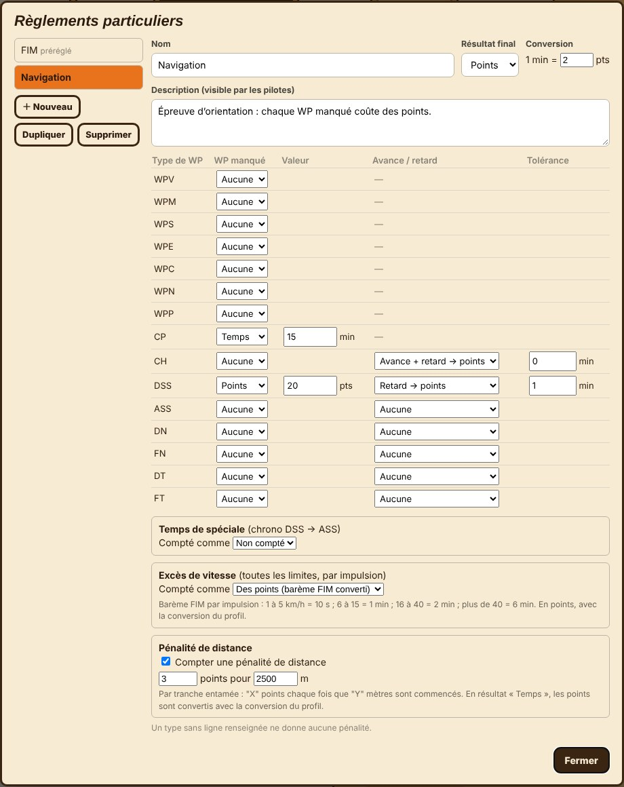
| Réglage | Rôle |
|---|---|
| Nom, Description | Le nom et la description sont montrés aux pilotes dans le lecteur. |
| Résultat final | Points ou Temps : l’unité du total. Chaque pénalité garde son unité ; seul le total est converti. |
| Conversion | « 1 min = … pts », utilisée dans les deux sens (minutes en points, points en minutes). |
| WP manqué | Par type de WP : aucune pénalité, du temps (en minutes) ou des points. |
| Avance / retard | Seulement pour les types qui ont une heure (CH, DSS, ASS, DT, FT, DN, FN) : avance et/ou retard comptés en temps (1 min par minute) ou en points (avec la conversion), après une tolérance en minutes. Choix : aucun, avance, retard ou les deux, en temps ou en points. |
| Temps de spéciale | Le chrono DSS → ASS : non compté, compté en temps, ou converti en points (« 1 min de spéciale = … pt »). |
| Excès de vitesse | Toutes les limites (zones, spéciale, liaison, limite générale), par impulsion de vitesse. Non compté, en temps (barème FIM : 1 à 5 km/h = 10 s, 6 à 15 = 1 min, 16 à 40 = 2 min, plus de 40 = 6 min) ou en points (même barème converti avec la conversion). |
| Pénalité de distance | Case à cocher, puis « X points pour Y mètres », par tranche entamée : X points chaque fois que Y mètres sont commencés. Tu choisis si la distance est comptée sur tout le roadbook ou seulement dans les spéciales (DSS → ASS). |
Un type sans ligne renseignée ne donne aucune pénalité. Le règlement ne change pas la façon dont le lecteur mesure les temps : il indique seulement comment les écarts sont valorisés.
Dans la fenêtre 💾 Exporter GPX, la liste Règlement particulier inclus propose tes profils ou « Aucun ». On n’inclut qu’un seul profil par fichier. Sans règlement, le lecteur garde ses propres règles (FIM ou lecture libre). Le choix n’est pas enregistré dans le projet : vérifie la liste avant chaque export.
Le règlement est écrit dans l’espace de noms rbgen: du GPX ; les autres lecteurs l’ignorent et le fichier reste un GPX OpenRally valide. Le GPX garde la main : ses pénalités passent avant les réglages manuels du lecteur.
Sauvegarde automatique : le travail est conservé tout seul dans le navigateur (trace, notes, réglages, description). On retrouve son roadbook en rouvrant l’appli. Cette copie est liée à ce navigateur et à cet appareil ; vider les données du navigateur l’efface.
🗂️ Sauvegarder (ou ⋯ › Projet › Enregistrer le projet) : crée un fichier projet .json à conserver ou à transmettre. Le point orange du bouton signale des modifications non enregistrées.
Rouvrir : 📂 Ouvrir GPX accepte aussi le fichier .json.
🆕 Nouveau roadbook (⋯ › Projet) : repart à zéro (trace, notes, description et sources enregistrées sont effacées).
↩️ Annuler / Ctrl+Z : annule les dernières modifications.
⋯ › Réglages › Mes réglages : enregistre dans un petit fichier tes fonds de carte et couches personnels, le fond et la couche affichés, le thème, la langue, les rayons, tes règlements particuliers et ta clé OpenRoute éventuelle ; « Restaurer depuis un fichier » les remet en place (utile pour changer de navigateur ou d’appareil). Le projet en cours n’en fait pas partie.
Même fenêtre (Chrome ou Edge sur ordinateur seulement) : choisis un dossier, et le fichier reglages-roadbook.json y est mis à jour tout seul à chaque changement de réglage. Dans un navigateur neuf (aucun réglage), l’appli reprend ceux du dossier. Après un redémarrage du navigateur, il peut demander ton accord au premier clic. Le fichier contient ta clé OpenRoute éventuelle : ne le partage pas.
Projet en cours dans le dossier : avec cette sauvegarde, la case « Sauvegarder aussi le projet en cours » (cochée par défaut) copie ta trace et tes notes dans le même dossier, 4 secondes après chaque modification : un fichier nom-du-projet.roadbook.json par projet, que tu rouvres avec « Ouvrir ». Dans un navigateur sans projet, l’appli te propose d’ouvrir le plus récent du dossier. Un projet sans trace n’est jamais écrit, pour ne pas écraser un vrai fichier.
⋯ › Projet › Enregistrer les chemins OSM copie les chemins téléchargés dans un fichier .rbosm (dossier au choix) ; Charger des chemins OSM les recharge : la génération n’a plus besoin d’internet.

💾 Exporter GPX ouvre une fenêtre de choix, avec la liste du règlement particulier inclus (chapitre 10) :
| Choix | Contenu | À utiliser pour |
|---|---|---|
| GPX Roadbook + Projet | Notes + waypoints + trace + projet complet embarqué (environ 170 Ko de plus). Le lecteur ignore le projet | Garder une version rééditable : en rouvrant ce GPX dans l’éditeur, on retrouve le roadbook et on peut le modifier |
| GPX Roadbook complet | Notes + waypoints + trace. Fichier léger | Donner le roadbook à un pilote ou le lire dans ton lecteur. Pas de reprise modifiable |
| GPX Mode Roadbook | Notes + waypoints, sans la trace | Un lecteur qui a déjà la trace par ailleurs |
| GPX Mode Trace | Trace + waypoints, sans les notes du roadbook. Très léger | Naviguer sur la trace avec ses points de passage, zones et carburant, sans les tulipes |
| GPX Mode Orientation | Waypoints seulement (les marqueurs de la carte ne sont pas inclus) | Une navigation à l’orientation : seuls les points à rejoindre comptent |
Le fichier est un GPX OpenRally v1.0.3 : tulipes et notes en images, distance, cap, danger, waypoints avec leurs rayons d’ouverture et de validation, zones DZ / FZ avec vitesse, carburant, DN en neutralisation (durée), temps limite, description du roadbook, règlement particulier et trace recalée. Les modes Trace et Orientation ne gardent que les points qui portent un waypoint, une zone ou du carburant, sans image de tulipe ni de note : essaie-les d’abord dans ton lecteur.
Un GPX venu de n’importe quelle autre source (logiciel, site, autre roadbook) n’a souvent pas de trace : seulement des waypoints, avec pour chaque note une image de tulipe et une image de 3e case. Ouvre-le avec Ouvrir GPX : le générateur propose de l’importer.
Chaque waypoint devient une note, à sa position et à sa distance.
Les marqueurs (DSS, ASS, WPM, WPV, WPS, CH, DZ/FZ…), caps, dangers et rayons sont repris.
Les images sont gardées telles quelles : elles s’affichent à la place des cases dessinées, et sont réécrites à l’export GPX.
Pour revenir au dessin du générateur, ouvre la note (✎) et coche « Remplacer l’image… par le dessin du générateur ».
🖨️ Imprimer ouvre l’impression du navigateur, qui permet aussi d’enregistrer en PDF. La mise en page reprend le roadbook à l’écran : bande de 3 cases de 48 mm, 5 notes par page A4, un en-tête par page (nom, numéro de page, total en km). La description occupe 2 places en haut de la page 1. L’étiquette « manuelle » n’est jamais imprimée ; un CAP gris (désactivé) n’est pas imprimé.
Quand tu ouvres le fichier HTML directement (sans adresse web), l’option OSM détaillé (Overpass) est souvent refusée. La fenêtre de génération affiche alors un avertissement avec le lien 🌐 Ouvrir la Web App : enregistre ton projet (🗂️), ouvre la Web App, puis rouvre le projet.

Web App (GitHub Pages) : l’appli est installée comme une application (ordinateur ou téléphone), fonctionne avec une vraie adresse web et se met à jour d’elle-même.
Fichier HTML local : pratique, mais le navigateur n’envoie pas d’adresse web aux serveurs. OSM détaillé y est souvent refusé ; la BD TOPO de l’IGN et OpenFreeMap marchent normalement.
Une connexion internet est nécessaire pour la carte, le calcul d’itinéraire et le téléchargement des chemins (sauf chemins déjà en mémoire).
Quand une version plus récente est en ligne, un bandeau apparaît en bas de l’écran (au démarrage, puis à chaque retour sur l’onglet). « Recharger » garde ton projet et recharge l’appli ; « ✕ » la masque jusqu’à la fermeture de l’onglet. Rien ne s’affiche dans un fichier HTML ouvert en local.
Ouvrir GPX : la trace de 120 km s’affiche.
Si elle démarre trop tôt ou finit trop tard : ✏️ Dessiner › ✂ Couper aux bons endroits, puis ✔ Terminer.
Réglages de génération : FRO/FPP à 2, repères activés.
Générer le roadbook : Tulipes = BD TOPO, Instructions = OSM détaillé (Web App).
Lire le rapport ; si « Parcours peu reconnu », augmenter l’écart maxi et régénérer.
Contrôler les notes contre OpenFreeMap, corriger les notes ⚠ (Garder A / B).
Poser DSS, ASS, WPM, DZ / FZ, carburant ; ajouter la description du roadbook.
Exporter GPX en « Roadbook + Projet » (copie de travail), puis en « Roadbook complet » pour les pilotes ; Imprimer en PDF pour le papier.
Chercher le lieu de départ dans le champ de recherche.
✏️ Dessiner, mode « Suivre pistes & chemins », ⚡ Roadbook en direct coché.
Poser les points ; touche R pour traverser un champ en ligne droite.
✔ Terminer, puis Générer le roadbook pour avoir les repères de la source détaillée.
Mesurer les caps du passage hors piste avec Mesurer un cap.
Poser des WPN et WPP aux points à trouver, avec nom et description (énigme).
Règlements particuliers › Nouveau : résultat en points, WPN manqué 30 pts, WPP manqué 10 pts, temps non compté, distance 1 pt par 500 m entamés.
Exporter GPX › Mode Orientation, règlement « Navigation » inclus.
Les pilotes chargent le GPX : le lecteur affiche le règlement et applique les pénalités.
Ouvrir GPX sur le fichier sans trace, confirmer l’import.
Ajouter les descriptions de WP et poser un règlement particulier.
Exporter GPX : les images d’origine sont réécrites telles quelles.
| Problème | Cause probable | Solution |
|---|---|---|
| Des intersections manquent | La trace s’éloigne des chemins connus | Réglages › « Écart maxi trace ↔ chemins » à 70 m, régénérer |
| « Parcours peu reconnu » | Moins de 60 % de la trace recalée | Idem ; vérifier la source (BD TOPO uniquement en France) |
| Trop de notes | Beaucoup de carrefours « tout droit » | Décocher « intersections où l’on continue tout droit », augmenter le regroupement FRO/FPP |
| Génération refusée avec OSM détaillé | Fichier HTML local : les serveurs Overpass refusent | Utiliser la Web App, ou la BD TOPO / OpenFreeMap |
| « Réseau indisponible » en mode direct | Pas de connexion | Continuer à dessiner, générer plus tard |
| Le point dessiné n’est pas posé | Aimant : aucun chemin à moins de la distance réglée | Rapprocher le point, augmenter l’aimant ou couper le routage (R) |
| « Coller à la route » est grisé | Aucune sélection | Utiliser 👆 Sélectionner d’abord |
| Une note modifiée ne change plus à la régénération | Les notes modifiées à la main sont protégées | La supprimer puis régénérer |
| Un GPX rouvert ne redonne que la trace | Exporté sans le projet | Exporter en « Roadbook + Projet » ; garder un .json |
| Le règlement n’apparaît pas dans le lecteur | Aucun profil choisi à l’export | Choisir le profil dans « Règlement particulier inclus » avant d’exporter |
| Une nouveauté de l’appli n’apparaît pas | Ancienne version en cache | Ctrl+Maj+R ; sur téléphone, fermer et rouvrir l’appli |
| Un fond de carte ajouté à la main ne se supprime pas | Ancienne version en cache | Même solution |
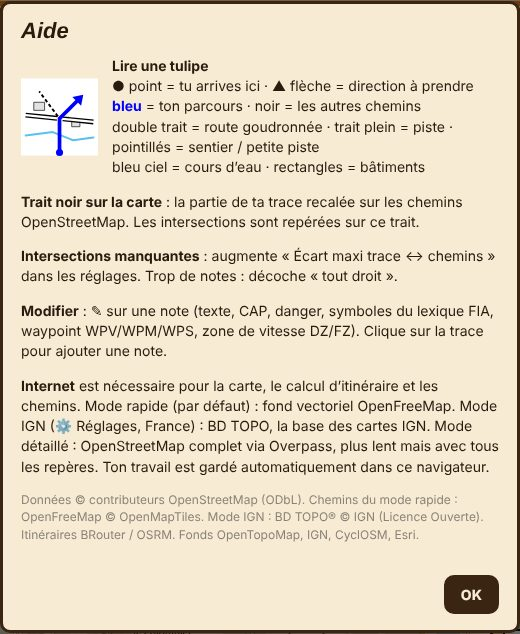
⋯ › Aide › Aide rappelle comment lire une tulipe, la couleur du trait noir sur la carte, et les astuces de dépannage. 📖 Manuel d’utilisation ouvre ce manuel dans la langue de l’appli.
Données © contributeurs OpenStreetMap (ODbL), OpenFreeMap © OpenMapTiles, BD TOPO® © IGN (Licence Ouverte), itinéraires BRouter / OSRM, fonds OpenTopoMap, IGN, CyclOSM, Esri.